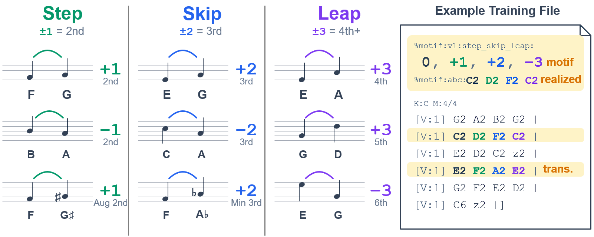

Deep learning has transformed symbolic music generation by borrowing the training paradigms of large language models, with systems such as NotaGen now producing complete, stylistically convincing classical scores from a short prompt. These systems could become powerful creative partners, helping musicians generate endless possibilities. However, current systems expose almost no control handles on the music itself. In principle, control handles could be built into a foundation model trained from scratch, but this is rarely practical without massive amounts of quality annotated data and compute resources. We therefore present MotiGen, a recipe for retrofitting pretrained symbolic music models to use new instruction prompts. MotiGen injects a musical motif as a structured prompt line, reinforces it with a scalar attention bias toward the motif tokens, and learns the association with a two-phase curriculum. First it learns from focused excerpts cropped around motif occurrences in the training data, then full scores including the motifs. Our experiments show that our model composes with the prompted motif in over 92.3% of generated pieces. Generated pieces using a variety of motifs are included in our sample site: https://motigen-site.github.io/.
Generated examples: supplementary material for peer review
Each piece below was generated by the largest MotiGen
configuration (NotaGen backbone, 20-layer patch encoder, hidden size 1280; fine-tuned on the Lieder corpus
plus the full ~216k-tune Irishman collection with a motif-aware synthetic curriculum; trained-in motif
attention bias +4). The model was prompted with a single abstract motif line, e.g.
%motif:v1:step_skip_leap: 0,3,-1,-1. No concrete realization was provided;
the model invents its own. Sampling: top-k 9, top-p 0.9, temperature 1.2.

0,3,-1,-1 = a note, a leap up, then two steps down.
Every occurrence of the prompted motif is highlighted in red
in both the engraved score and the raw ABC.Selection. Examples are drawn from the paper’s 50-piece evaluation runs (one run
per motif). Every piece shown realizes the prompted motif faithfully in its own
%motif:abc line, contains the motif in the generated melody, and uses its own realization
in the piece: at least a motif-length span of the realization’s pitches appears verbatim in the body.
A note on chords. While we trained the model to output only a single voice (i.e. the melody), some harmonization passed through the data cleaning stage. This led the model to sometimes output chords as well. Since the chords really didn’t degrade generation and are often rather pleasant, we decided to leave them in.